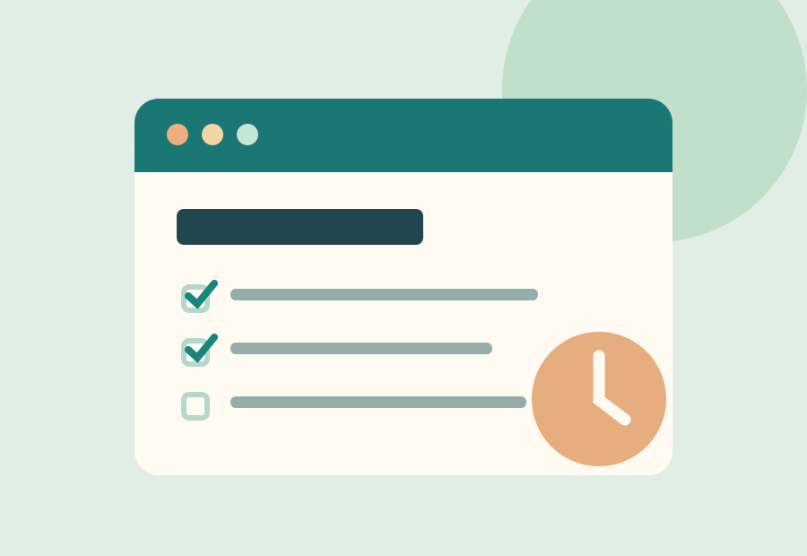

← Volver a todas las entradasBienestar digital · 2 de noviembre de 2026
Organiza tu día sin vivir pendiente de la pantalla
La productividad empieza por decidir qué merece tu atención.

Las herramientas digitales nos ayudan a estudiar, trabajar y comunicarnos, pero una agenda llena de avisos puede dificultar la concentración. Organizar el día no consiste en hacer más cosas, sino en distinguir lo importante de lo urgente.
1. Empieza por tres prioridades
Antes de abrir las redes sociales o el correo, anota tres tareas que quieras completar. Procura formularlas de forma concreta: «revisar los apuntes durante 30 minutos» funciona mejor que «estudiar más».
2. Agrupa las notificaciones
Desactiva los avisos que no sean indispensables y consulta los mensajes en momentos definidos. Así evitas interrumpir constantemente una tarea que necesita atención.
3. Reserva pausas reales
Después de un periodo de concentración, levántate, estira las piernas o mira a lo lejos. Una pausa breve, sin cambiar de una pantalla a otra, ayuda a volver con energía.
Prueba práctica: elige una tarea, trabaja 25 minutos sin interrupciones y descansa 5. Ajusta el intervalo a tu ritmo.
Lo importante es mantener una rutina flexible y realista. La tecnología debe apoyar tus objetivos, no imponer el ritmo de cada jornada.
Ejemplo de planificación para una mañana
Empieza anotando una prioridad de estudio, una tarea pendiente y una actividad personal. Reserva 45 minutos para la primera, descansa 10 minutos y después revisa tus avances. Si una tarea tarda más de lo esperado, ajusta el calendario en vez de llenarlo de compromisos imposibles.
Cómo usar mejor las herramientas digitales
- Calendario: señala entregas y reserva bloques realistas de trabajo.
- Lista de tareas: convierte objetivos amplios en acciones concretas.
- Modo no molestar: evita interrupciones mientras estudias.
Errores frecuentes
Consultar el móvil cada pocos minutos, estudiar sin descansos o confundir estar ocupado con avanzar puede dificultar la organización. Al terminar el día, pregúntate qué tarea completaste, qué interrupciones aparecieron y qué modificarás mañana.
Actividad práctica: durante un día, identifica tres tareas prioritarias y prueba dos bloques de concentración. Al finalizar, escribe qué método te ayudó más.